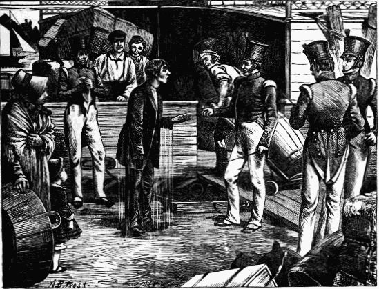
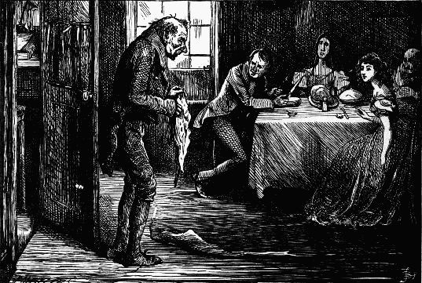
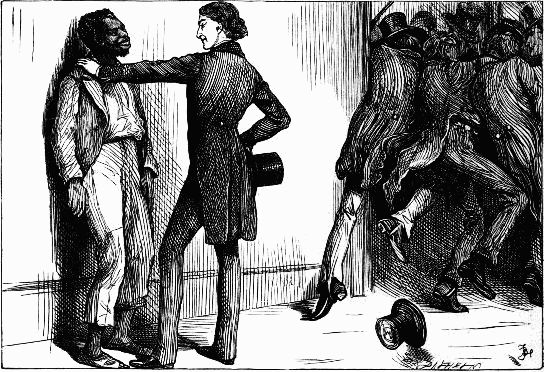
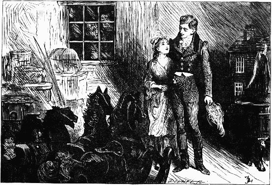

Sat the unhappy author of all—Lord George Gordon—Chap. lxxiii.
He rose from his bed with a heavy sigh, and wrapped himself in his morning gown. "So she kept her word," he said, "and was constant to her threat!"—Chap. lxxv.
The locksmith's ruddy face and burly form could be descried, beating about as though he was struggling with a rough sea—Chap. lxxix.
Reclining, in an easy attitude, with his back against a tree, and contemplating the ruin with an expression of pleasure—Chap. lxxxi.
Raising himself upon his hands, he gazed at him for an instant with scorn and hatred in his look—Chap. lxxxi.
Grip the Raven—Chap. the last.
TEN ILLUSTRATIONS
BY A. B. FROST
"Rather a heavy sea on, sir, and a head wind"—Chap. ii
.
 Railway dialogue—Chap. v.
Railway dialogue—Chap. v.
When suddenly the lively hero dashes in to the rescue—Chap. vi.
In the White House—Chap. vii
In the cabin of the canal boat—Chap. x.
Emigrants—Chap. xi.
"Not yet awhile, sir, not yet"—Chap. xiii.
 And having his wet pipe presented to him, etc.—Chap. xv.
As the coach stops a gentleman in a straw hat looks out of the window—Chap. xiv.
FIFTY-NINE ILLUSTRATIONS
BY FRED BARNARD
"I see you," cried Miss Pecksniff to the ideal inflictor of a runaway knock, "you'll catch it; sir!"—Chap. ii.
Mr. Pecksniff, looking sweetly over the half-door of the par, and into the vista of snug privacy beyond, murmured, "Good evening, Mrs. Lupin"—Chap. iii.
"We will say, if you please," added Mr. Pecksniff, with great tenderness of manner, "that it arises from a cold in the head, or is attributable to snuff, or smelling salts, or onions, or anything but the real cause"—Chap. iii. 
 Mr. Pecksniff is introduced to a relative by Mr. Tigg—Chap. iv.
Mr. Pecksniff is introduced to a relative by Mr. Tigg—Chap. iv.
"He turned a whimsical face and very merry pair of blue eyes on Mr. Pinch."—Chap. v.
"Let us be merry." Here he took a captain's biscuit—Chap. v.
"Still a-bed," replied the boy; "I wish they wos still a-bed. They're very noisy a-bed; all calling for their boots at once"—Chap. viii. 
"Oh Chiv, Chiv," murmured Mr. Tigg, "you have a nobly independent nature, Chiv"—Chap. vii.
"You're a pair of Whittingtons, gents, without the cat, . . . My name is Tigg; how do you do?"—Chap. vii.
"I say—there's fowls to-morrow, not skinny ones. Oh no!"—Chap. ix.
"Do not repine, my friends," said Mr. Pecksniff, tenderly. "Do not weep for me. It is chronic"—Chap. ix.
"We sometimes venture to consider her rather a fine figure, sir. Speaking as an artist, I may perhaps be permitted to suggest, that its outline is graceful and correct"—Chap. x.
 The door of a small glass office, which was partitioned off from the rest of the room, was slowly opened, and a little blear-eyed, weazen-faced, ancient man came creeping out.—Chap. xi.
"Stand off for a moment, Tom," cried the old pupil, . . . "Let me look at you! Just the same! Not a bit changed!"—Chap. xii.
"I'm going up," observed the driver; "Hounslow, ten miles this side London"—Chap. xiii.
Stuck his hands in his skirt pockets and swaggered round the corner.—Chap. xiii.
Seeing that there was no one near, and that Mark was still intent upon the fog, he not only looked at her lips, but kissed them into the bargain—Chap. xiv.
On board the "Screw"—Chap. xv.
"It is in such enlightened means," said a voice almost in Martin's ear, "that the bubbling passions of my country find a vent"—Chap. xvi.
 "You're the pleasantest fellow I have seen yet," said Martin, clapping him on the back, "and give me a better appetite than bitters"—Chap. xvi.
Jiniral Bladdock!—Chap. xvii.
"Matter!" cried the voice of Mr. Pecksniff, as Pecksniff in the flesh smiled amiably upon him. "The matter, Mr. Jonas!"—Chap. xviii.
"Well, Mrs. Gamp, and how are you! Mrs. Gamp," said the gentleman, in a voice as soft as his step—Chap. xix.
"Oh! I don't mind your pinching," grinned Jonas, "a bit"—Chap. xx.
"I was merely remarking, gentlemen—though it's a point of very little import—that the Queen Of England does not happen to live in the Tower of London"—Chap. xxi.
"Well, sir!" said the captain putting his hat a little more on one side, for it was rather tight in the crown: "You're quite a public man I calc'late"—Chap. xxii.
He flourished his stick over Tom's head; but in a moment it was spinning harmlessly in the air, and Jonas Himself Lay Sprawling in the Ditch—Chap. xxiv.
"Look about you," he said, pointing to the graves; "and remember that from your bridal hour to the day which sees you brought as low as these, and laid in such a bed, there will be no appeal against him!"—Chap. xxiv.
"Whether I sicks or monthlies, ma'am . . . I do require it, which I makes confession, to be brought reg'lar and draw'd mild"—Chap. xxv.
 "There's nothin' he don't know; that's my opinion," observed Mrs. Gamp. "All the wickedness of the world is print to him"—Chap. xxvi.
"There's nothin' he don't know; that's my opinion," observed Mrs. Gamp. "All the wickedness of the world is print to him"—Chap. xxvi.
The Spider and the Fly—Chap. xxvii.
"Times is changed, ain't they! I say, how you've growed!"—Chap. xxviii.
Rustling among last year's leaves, whose scent woke memory of the past, the placid Pecksniff strolled—Chap. xxx.
"I say," cried Tom, in great excitement, "He is a scoundrel and a villain! I don't care who he is, I say he is a double-dyed and most intolerable villain"—Chap. xxxi.
"Mr. Pinch," said Mr. Pecksniff, shaking his head, "Oh, Mr. Pinch! I wonder how you can look me in the face!"—Chap. xxxi.
On the fourteenth night he kissed Miss Pecksniff's snuffers, in the passage, when she went upstairs to bed: meaning to have kissed her hand, but missing it—Chap. xxii.
"Jolly"—Chap. xxxiii.
"Why, what the 'tarnal!" cried the captain. "Well! I do admire at this, I do!"—Chap. xxxiv. 
Mr. Pecksniff, placid, calm, but proud. Honestly proud . . . gently travelling across the disc, as if he were a figure in a magic lantern—Chap. xxxv.
"No right!" cried the brass and copper founder—Chap. xxxvi.
Mr. Nadgett produces the result of his private inquiries—Chap. xxxviii.
"I am going to begin, Tom. Don't you wonder why I butter the inside of the basin!" said his busy little sister, "eh, Tom?"—Chap. xxxix.
"I can't say; it's impossible to tell. I really have no idea. But," said Fips, taking off a very deep impression of the wafer-stamp upon the calf of his left leg, and looking steadily at Tom, "I don't know that it's a matter of much consequence"—Chap. xxxix.
Mrs. Gamp creates a sensation with her umbrella—Chap. xl.
"Now, could you cut a mans throat with such a thing as this!" demanded Jonas—Chap. xli.
Awoke to find Jonas standing at his bedside watching him. And that very door wide open.—Chap. xlii.
Familiar faces—Chap. xliii.
"Oh fie, fie!" cried Mr. Pecksniff. "You are very pleasant. That I am sure you don't! That I am sure you don't! How can you, you know"—Chap. xliv.
Mr. Moddle, with a dark look, replied: "The drivers won't do it"—Chap. xlvi.
Mrs. Gamp favours the company with an exhibition of professional skill—Chap. xlvi.
Done—Chap. xlvii.
"Speak out!" said Martin, "and speak the truth"—Chap. xlvii.
Then Mrs. Gamp rose—morally and physically rose—and denounced her—Chap. xlix.
 Brother and sister—Chap. l.
Brother and sister—Chap. l.
He started back as his eyes met those, standing in an angle of the wall, and staring at him. His neckerchief was off; his face was ashy pale—Chap. li.
The fall of Pecksniff—Chap. lii.
"Yes sir," returned Miss Pecksniff, modestly, "I am. I—my dress is rather—really Mrs. Todgers!"—Chap. liv. 
Tom's reverie—Chap. liv.
TWENTY-EIGHT ILLUSTRATIONS
BY FRED BARNARD
"It's not convenient," said Scrooge, "and it's not fair. If I was to stop half-a-crown for it, you'd think yourself ill used, I'll be bound!"—A Christmas Carol, Stave i.
Marley's Ghost—A Christmas Carol, Stave i.
He had been Tim's blood-horse all the way from church, and had come home rampant—A Christmas Carol, Stave iii.
This pleasantry was received with a general laugh—A Christmas Carol, Stave iv.
"What do you call this!" said Joe, "bed curtains!"—A Christmas Carol, Stave iv.
"No," said Toby, after another sniff. "It's—it's mellower than polonies. It's very nice. It improves every moment. It's too decided for trotters. An't it!"—The Chimes, First Quarter
The poor man's friend.—The Chimes, Second Quarter
"Never more, Meg; never more! Here! here! Close to you, holding to you, feeling your dear breath upon my face!"—The Chimes, Third Quarter
"Whither thou goest, I can not go; where thou lodgest, I do not lodge; thy people are not my people; nor thy God, my God!"—The Chimes, Third Quarter
"You're in spirits Tugby, my dear," observed his wife. . . . "No," said Tugby. "No; not particular. I'm a little elevated. The muffins came so pat!"—The Chimes, Fourth Quarter
John Peerybingle's fireside—The Cricket on the Hearth, Chirp the first
"Did its mother make it up a beds, then!" cried Miss Slowboy to the baby; "and did its hair grow brown and curly when its caps was lifted off, and frighten it, a precious pets, a sitting by the fires!"—The Cricket on the Hearth, Chirp the first
 "The extent to which he's winking at this moment!" whispered Caleb to his daughter. "Oh, my gracious!"—The Cricket on the Hearth, Chirp the second
"The extent to which he's winking at this moment!" whispered Caleb to his daughter. "Oh, my gracious!"—The Cricket on the Hearth, Chirp the second
 Suffering him to clasp her round the waist, as they moved slowly down the dim wooden gallery—The Cricket on the Hearth, Chirp the second
After dinner Caleb sang the song about the sparkling bowl—The Cricket on the Hearth, Chirp the third
The ploughshare still turned up, from time to time, some rusty bits of metal, but it was hard to say what use they had ever served, and those who found them wondered and disputed—The Battle of Life, Part the first
"By the bye," and he looked into the pretty face, still close to his, "I suppose it's your birthday"—The Battle of Life, Part the first
"I think it will be better not to hear this, Mr. Craggs!" said Snitchey, looking at him across the client. "I think not," said Craggs—both listening attentively—The Battle of Life, Part the second
"What is the matter!" he exclaimed. "I don't know. I—I am afraid to think. Go back. Hark!"—The Battle of Life, Part the second
Guessed half aloud, "milk and water," "monthly warning," "mice and walnuts"—and couldn't approach her meaning—The Battle of Life, Part the third
"Merry and happy, was it?" asked the chemist in a low voice. "Merry and happy old man!"—The Haunted Man, chap. i.
It roved from door-step to door-step, in the arms of little Johnny Tetterby, and lagged heavily at the rear of troops of juveniles who followed the tumblers, etc.—The Haunted Man, chap. ii.
"Mr. Redlaw!" he exclaimed, and started up—The Haunted Man, chap. ii.
"I'm not a-going to take you there. Let me be or I'll heave some fire at you!"—The Haunted Man, chap. ii.
"You speak to me of what is lying here," the phantom interposed, and pointed with its finger to the boy—The Haunted Man, chap. iii.
"What a wonderful man you are, father! How are you father? are you really pretty hearty, though?" said William, shaking hands with him again, and patting him again, and rubbing him gently down again—The Haunted Man, chap. iii.